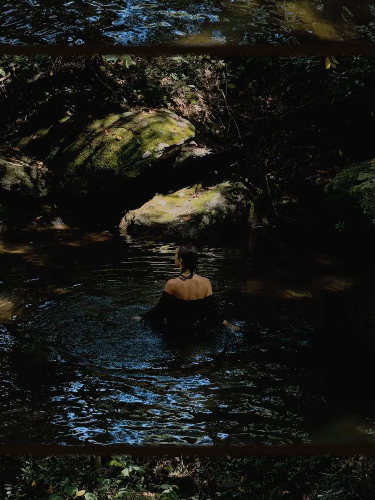

She Who Becomes
The Membership
A weekly space for women interested in the experience of becoming.

Not every question needs an immediate answer.
Some require us to return to them, to observe how they change in relation to our lives, and to recognize what becomes visible through sustained attention.
She Who Becomes is an ongoing community organized around these questions.
Every Monday, we gather for a live conversation and guided inquiry into a particular dimension of identity, meaning, and transformation.
We explore the stories we live by, the patterns we recognize, the truths that are changing, and the experience of inhabiting a life that remains unfinished.
What the membership includes
- A live gathering every Monday.
- Access to the recordings.
- Reflective invitations and practices between gatherings.
- A weekly letter developing the central theme.
- An ongoing community and library of inquiry.
Each week opens a different question.
We might explore what we are leaving behind, the contradictions we carry, what it means to recognize an emerging truth, or how to remain with uncertainty without immediately converting it into a problem to solve.
A continuing conversation
You don't need to be in the middle of an obvious life crisis to belong here.
You might be questioning an old idea of yourself, curious about a changing relationship with your desires, or simply drawn to a deeper exploration of what it means to become a person over time.
The membership creates a regular place for that inquiry within ordinary life.
Enter She Who Becomes
- Investment
- €33/month
Weekly live gathering · Recordings · Practices · Community